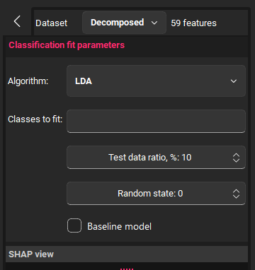
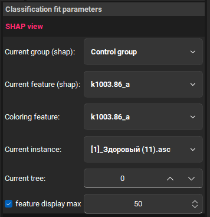
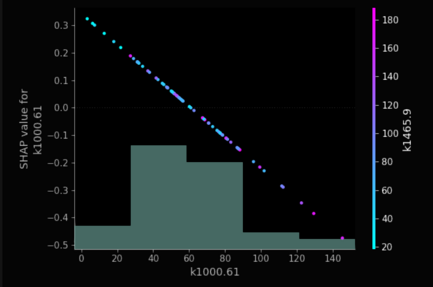
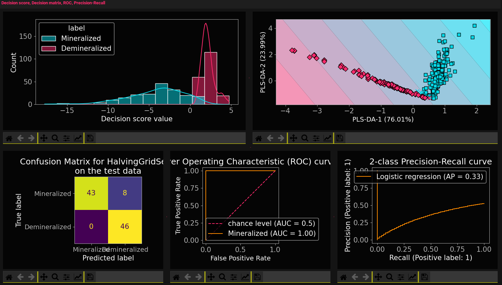
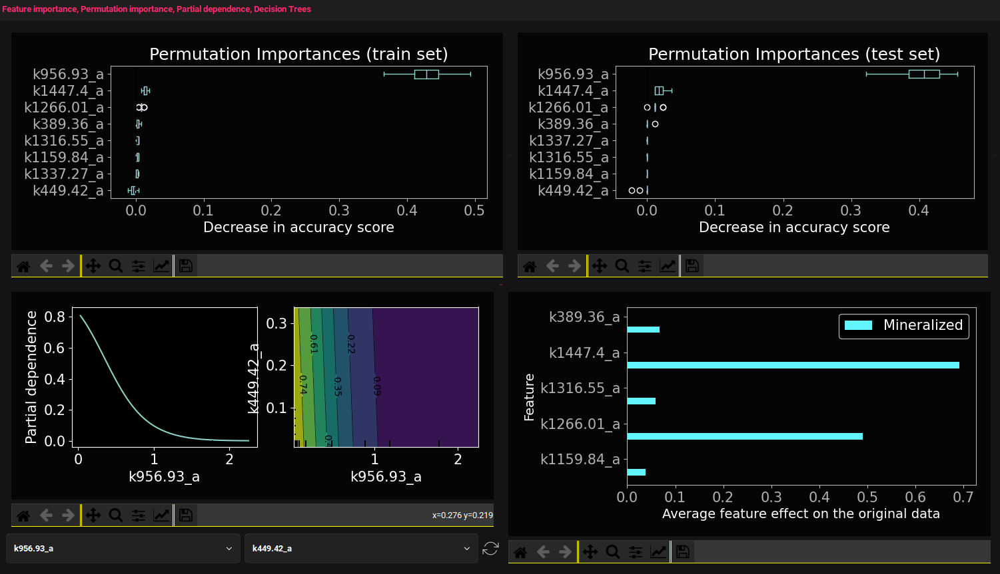
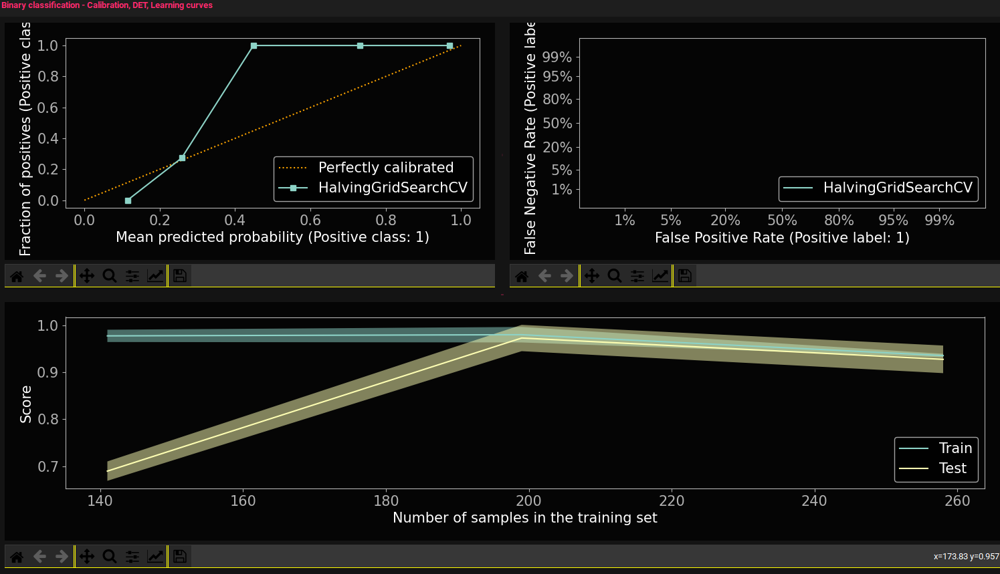
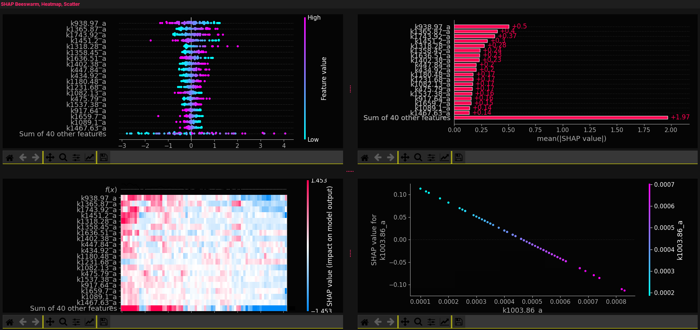
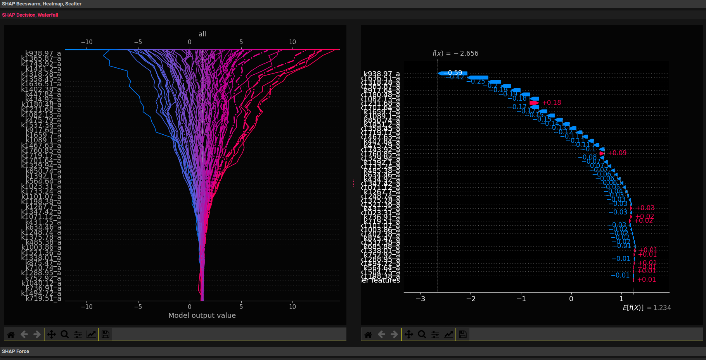
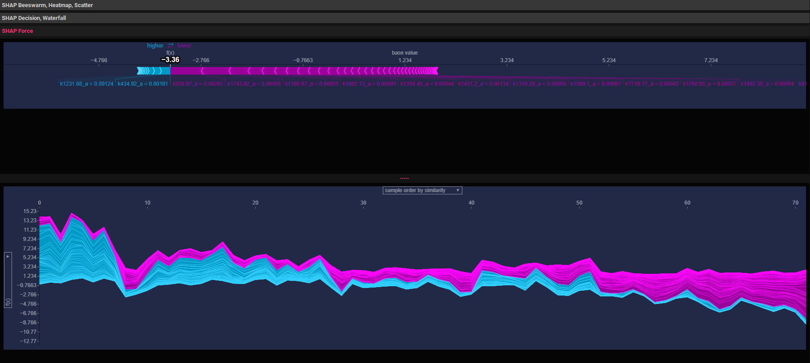

1.7. ML Stat analysis

The Dataset parameter is the selection of a dataset with training data from tab 3. The number of features is displayed to the right of it.
Algorithm is the selection of a model for training. The graphs will be displayed for the selected model.
Classes to fit: can be used if there are more than 2 groups and you need to classify them into specific groups. To do this, write the numbers of these groups in the field. For example: 1, 3, 4
Test data ratio is the percentage of the test sample from the original. The optimal value is 20-30%.
Random state - When dividing the total sample into test and training, the division occurs randomly. This parameter fixes the value of the pseudo-random number so that each sample calculation is formed identically. If you uncheck the box, the sample will be different each time and the result may differ.
Baseline model - if enabled, the hyperparameters will not be selected.

Current group (shap) - used in Shapley vector graphs. Relevant for the number of classes > 2. Depending on the selected group, Shapley data will be presented.
Current feature (shap) - updating the scatter plot for the selected variable.
Coloring feature - building a color scale based on the values of the selected variable. Relevant only for scatter plot.

Current instance - updating the graphs in Figure 5, 6. Building the dependence of the model output on a specific spectrum
Current tree - displaying a specific tree for the Random forest and XGBoost methods
Feature display max: relevant for the last 2 graphs, limits the number of features displayed on the graph.

The Fit results tab displays the results of classifier training, namely (depending on the model, the composition of the graphs may vary):
-
Graph of the distribution of model decisions.
-
Graph in 2D with readings and boundaries of group areas
-
Decision matrix
-
Recall precision graph
-
ROC curve

7. Decision trees - for Decision Tree, Random forest and XGBoost
9. Average feature effect on the original data - model coefficients.

For binary classification, also displayed:
The SHAP tab displays the following graphs:
graphs with model interpretation using the Shapley vector
You can read more about the classifiers themselves here


